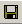

The Multiflash input file can be created quite easily using Multiflash for Windows. The following procedure is all that is required to generate a working Multiflash input file and include it in a gPROMS project.
Launch Multiflash for Windows by left clicking on the Start Menu and selecting Programs → Process Systems Enterprise → Multiflash 3.9 for Windows (assuming the default Start Menu shortcuts were installed).
The Multiflash window should now appear (see The Multiflash Window).
If you would like to follow the procedure in the Multiflash documentation, then select Programs → Process Systems Enterprise → Documentation → Multiflash → Multiflash for Windows from the Start Menu. Navigate to page 9 (which is the 19th page of the pdf document).
Define all of the components in the problem by clicking on the button or by selecting Components... from the Select menu.
Select the required databank from the Data source listbox (see Components Dialog).
Ensure the Name radio button is enabled.
Type in the name of a component in the Enter name: textbox and press return.
Repeat step 3 until all components have been added.
The components are shown on the left hand side and can be changed or removed using the Edit and Delete buttons below.
Press the Close button when all components have been added.
See page 12 of the Multiflash documentation for further details.
Define the physical property models to use by selecting Model set... from the Select menu.
When the Select Model Set dialog appears, choose the required models and press the Define Model button.
Press OK when the dialog appears indicating that the model was successfully created.
This is described on page 14 of the Multiflash documentation and detailed information about the models available can be found on page 27.
Save the Multiflash input file by selecting Save Problem Setup (or pressing CTRL-s) or Save Problem Setup As... from the File menu, or by pressing the save button: .
Choose a suitable location and name for the file. Exactly where it is saved is not important because it will be imported into the gPROMS project in the next step.
This step is described on page 16 of the Multiflash documentation. The steps that we have skipped are not important because the gPROMS activities performed will determine the values of the inputs to Multiflash.
Finally, import the Multiflash input file to the gPROMS project.
Select Import files... from the Tools menu.
Use the file browser to locate the Multiflash file that you saved in the previous step and press the Import button.
The Multiflash input file will now appear in the Miscellaneous Files section of the project tree and can be used in any gPROMS Models by following the procedures described in Incorporating physical properties in Models.